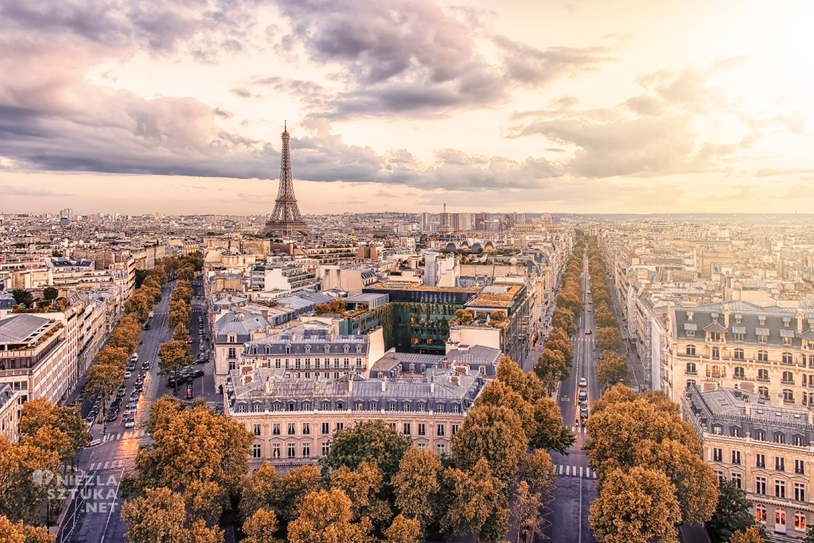
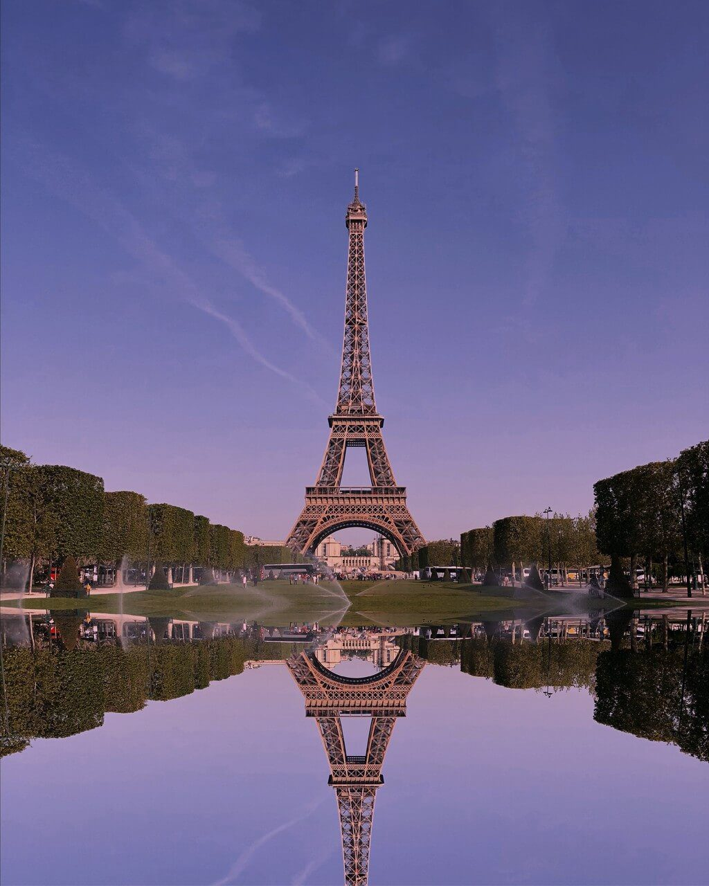
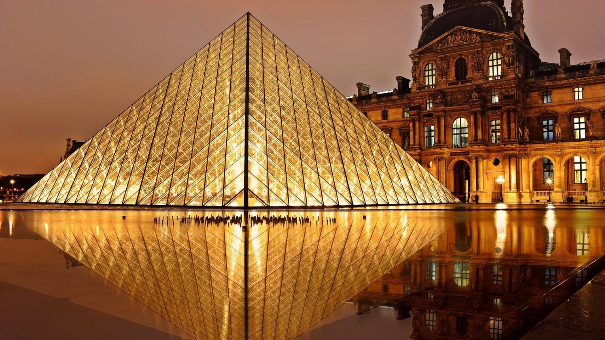
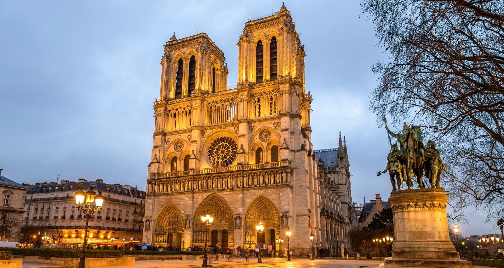
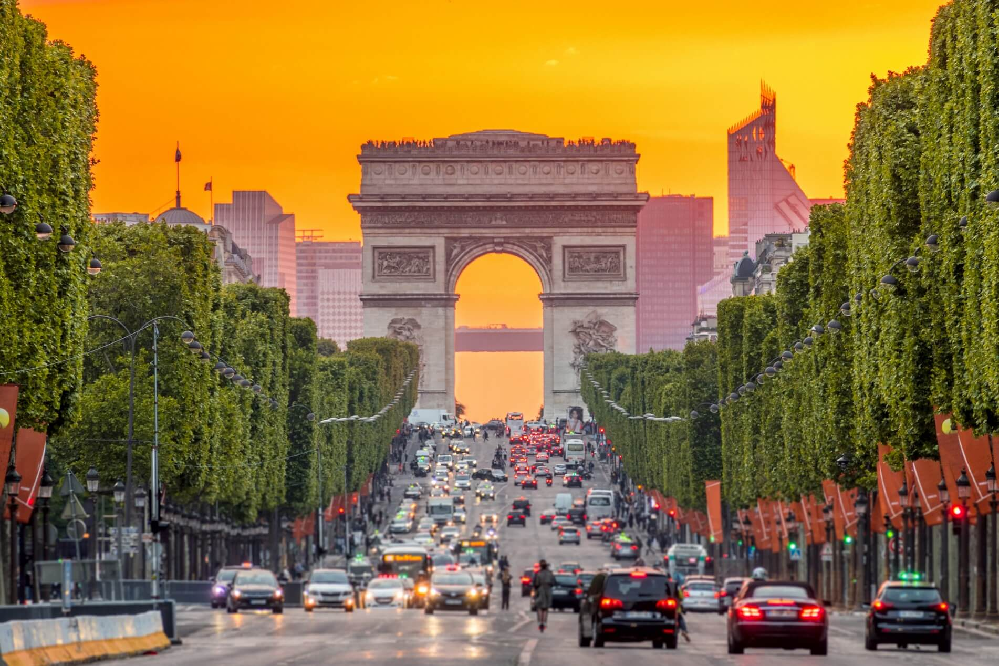

Paryż
Rzym Paryż Ateny

Paryż to stolica i najludniejsze miasto Francji, a także departament (nr 75), w regionie Île-de-France. Położone jest w północnej części kraju, w centrum Basenu Paryskiego, nad Sekwaną. Stanowi centrum polityczne, ekonomiczne i kulturalne kraju.Miasto ma układ koncentryczny z rozchodzącymi się gwiaździście bulwarami. Jego oś stanowi wcięta dolina Sekwany, która dzieli Paryż na dwie części: prawobrzeżną (północną) Rive Droite oraz lewobrzeżną (południową) Rive Gauche.
Zabytki:
Wieża Eiffla

Wieża Eiffla – obiekt architektoniczny Paryża, uznawany za symbol tego miasta i niekiedy całej Francji. Jest najwyższą budowlą w Paryżu, a w momencie powstania była najwyższą budowlą na świecie. „Żelazna dama” stoi w zachodniej części miasta, nad Sekwaną, na północno-zachodnim krańcu Pola Marsowego. Wieżę zbudowano specjalnie na paryską wystawę światową w 1889 roku. Miała upamiętnić setną rocznicę rewolucji francuskiej[1], zademonstrować poziom wiedzy inżynierskiej i możliwości techniczne epoki oraz być symbolem ówczesnej potęgi gospodarczej i naukowo-technicznej Francji.
Luwr

Luwr – dawny pałac królewski w Paryżu, obecnie muzeum sztuki. Jedno z największych muzeów na świecie, jest też najczęściej odwiedzaną placówką tego typu na świecie. Stanowi jeden z ważniejszych punktów orientacyjnych stolicy Francji. Luwr położony jest między rue de Rivoli i prawym brzegiem Sekwany oraz ogrodami Tuileries i Rue du Louvre w obrębie 1. dzielnicy. W kompleksie budynków o całkowitej powierzchni wynoszącej 60 600 m² mieszczą się zbiory liczące około 350 000 dzieł sztuki od czasów najdawniejszych po połowę wieku XIX, dzieła światowego dziedzictwa o największej sławie, takie jak np. stela z kodeksem Hammurabiego, Nike z Samotraki, Wenus z Milo, Mona Lisa Leonarda da Vinci.
Katedra Notre Dame

Notre-Dame de Paris – gotycka archikatedra w Paryżu. Jedna z najbardziej znanych katedr na świecie, między innymi dzięki powieści Katedra Marii Panny w Paryżu francuskiego pisarza Victora Hugo. Jej nazwa oznacza Naszą Panią i odnosi się do Marii, Matki Bożej. Wzniesiono ją na wyspie na Sekwanie zwanej Île de la Cité, w 4. dzielnicy Paryża, w miejscu po dwóch kościołach powstałych jeszcze w IX wieku. Jej budowa trwała około 200 lat (1163–1345). Od 10 sierpnia 1806 roku w skarbcu katedry – pod opieką kanoników Kapituły Bazyliki Metropolitalnej – przechowywane były relikwie korony cierniowej.
Łuk triumfalny

Łuk Triumfalny – monumentalny pomnik w formie łuku triumfalnego stojący na placu Charles-de-Gaulle w Paryżu (dawniej plac Gwiazdy, fr. Place de l’Étoile). Znajduje się w 8. dzielnicy, na zachodnim skraju alei Pól Elizejskich (fr. Avenue des Champs-Élysées). Jest to ważny element architektury Paryża, stanowiący zakończenie perspektywy Pól Elizejskich. Łuk został zbudowany w pierwszej połowie XIX wieku dla uczczenia walczących i poległych za Francję w czasie rewolucji francuskiej i wojen napoleońskich.
Opera Garnier

Opéra Garnier, Palais Garnier – gmach opery w Paryżu przeznaczony dla 2200 osób, wybudowany w stylu eklektycznym w latach 70. XIX w. według projektu Charles’a Garniera. Od otwarcia w 1875 do wybudowania Opéra Bastille siedziba Narodowej Opery Paryża, zaś od przeniesienia się zespołu do nowego obiektu nosi nazwę Palais Garnier, chociaż na fasadzie nadal widnieje stary napis Académie Nationale de Musique.Budowa Palais Garnier miała miejsce w czasie wielkiej przebudowy Paryża w czasach II Cesarstwa. W 1858 cesarz Napoleon III Bonaparte osobiście wydał polecenie rozbiórki 12 tys. metrów kwadratowych średniowiecznej zabudowy miejskiej w celu zwolnienia miejsca pod gmach teatralny. Konkurs na projekt gmachu wygrał nieznany dotąd 35-letni Charles Garnier.